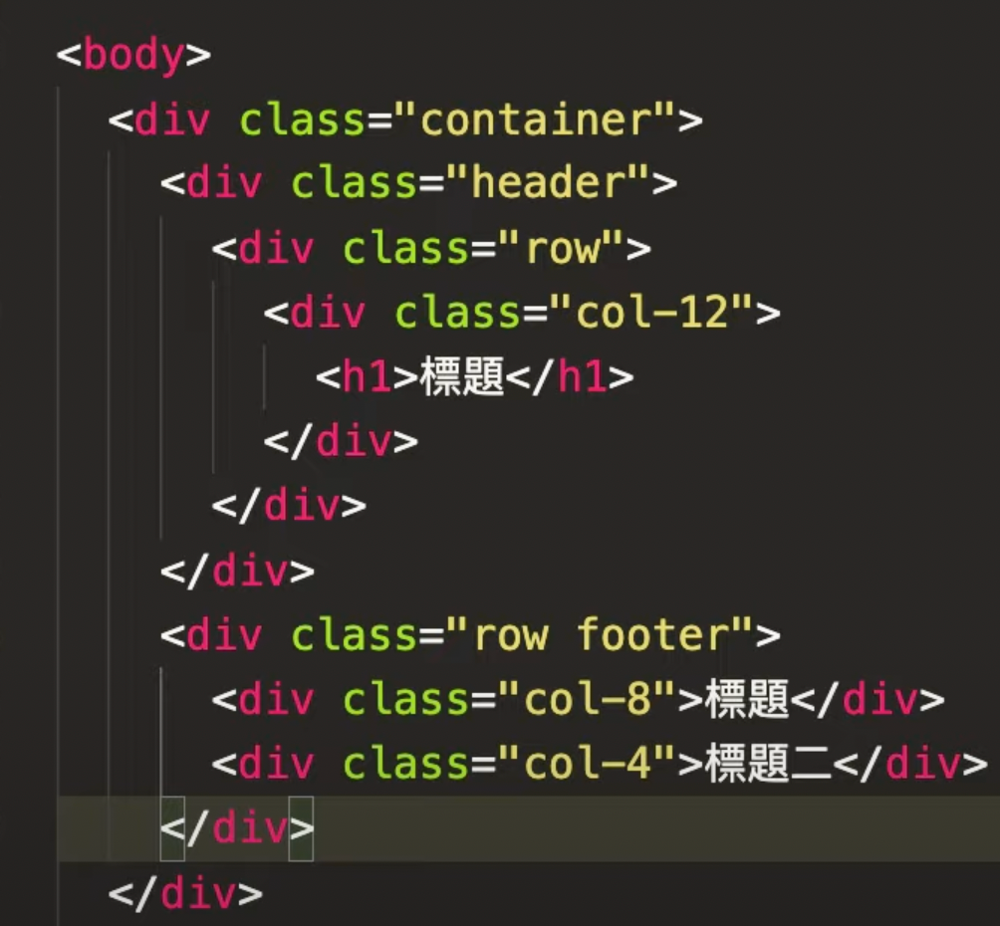
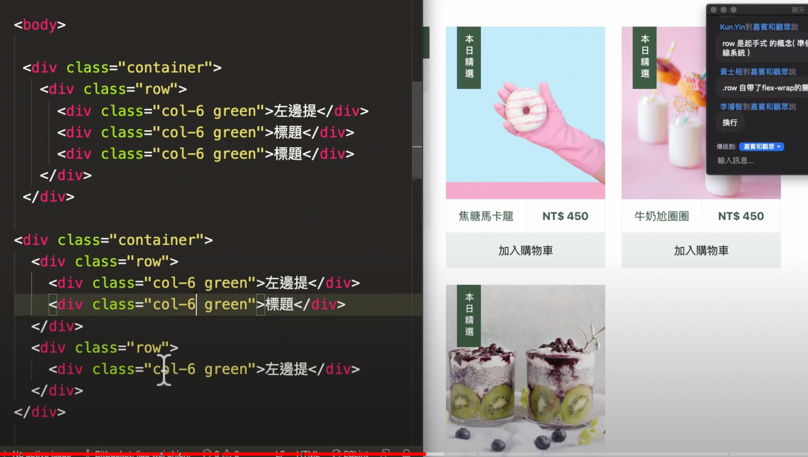
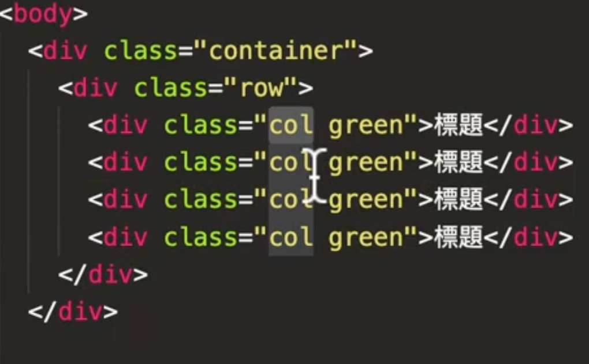
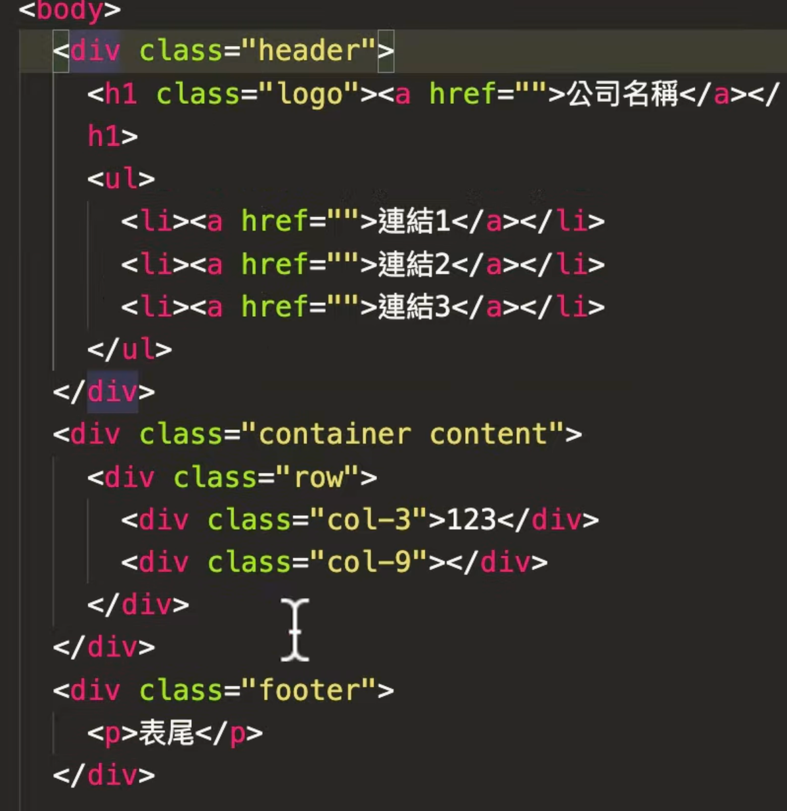
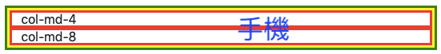
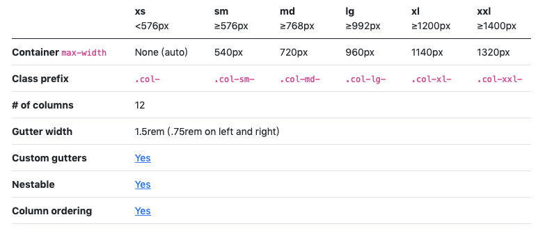
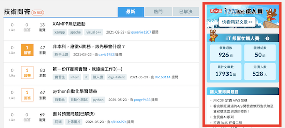
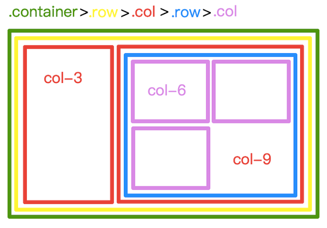

BS5 格線系統（Grid System）
什麼是格線系統？
- 為優化過多的
class、CSS 而發明 - 可減輕 magic number 的出現。什麼是 magic number？當設計稿寫：左邊 340 px、右邊 660 px，而你直接在 CSS 寫
width: 340px、width: 660px，就是 magic number - 以前螢幕寬度大多是 1024*768，所以當時格線系統寬度設計是 960
- 格線系統是透過 column（欄）、gutter（間距）的數字加總而成
- gutter 會以
margin或padding推擠產生
（Bootstrap 是用padding、960 是用margin，使用前可先了解是用哪個推擠的，比較不會出錯） - 格線系統使用
float寫成，而float有一特性：超過滿版時，元素會另起一行，也就是掉到第二行（如同 flexbox 的flex-wrap: wrap） - 格線系統設計成 12 欄的原因：能被比較多數字整除、在瀏覽上也較順利。除了 12 欄以外，也有 16、24 欄，但較少見
Bootstrap 上的格線系統
排版三劍客： .container 、 .row、 .col 1~12
.container是一個容器，可以把內容物居中.container固定寬度、.container-fluid滿版.row：no-gutters不需要 gutters
重要觀念
最外層至少一定要有一個
.container，不然.row會自適應螢幕解析度（滿版）.container的第一層不一定要是.row，可以放其他東西1
2
3
4
5
6
7<div class="container green">
<h4>標題</h4>
<div class="row yellow">
<div class="col-3 red">col-3</div>
<div class="col-9 red">col-9</div>
</div>
</div>.row裡面只能是.col.col的外層只能是.row網頁內容與元件請放在 .col 裡
記得：container > (xxx可有可無） > row > col > 內容
1 | <div class="container green"> |
不能做的事
- 不要在
.col增加寬度：格線系統已設定好寬度了，不要再增加寬度的 class 自找麻煩 - 不要在格線系統調整左右的
margin與padding：預設都已設定好一致性，任意調整可能造成破版
可以做的事
- 可以加上下的 margin 與 padding
- 整體格線邏輯是一致
單純使用 .col 沒有數字，會按比例排列
錯誤示範
<h1>不能單獨在外
1 | <div class="container"> |
row之後只能有col（雙層格線除外），不能再一用一個div包起來
1 | <div class="container"> |
正確寫法
row會自動換行，只要超過格線就會換去下一行
1 | <div class="container"> |
container後面不一定要直接接row，但row之後一定要接col

如果像下方的排版，請不要開兩行（row)，後端會瘋掉XD!!!

如果沒設定col-(x)，直接寫col，也是可以的，它會自適應去調整col的寬度。

下方header、footer滿版，content依照container，也可以的喔！

BS5 格線系統斷點（Breakpoint）設計

1 | <!-- 此 code 在手機版是兩欄上下排、PC 版則是並排--> |
1 |
|
- Bootstrap 格線系統預設六個斷點：極小（xs）、小（sm）、中（md）、大（lg）、特大（xl）、超級大（xxl），也可自定義。
- 若想先做 PC 版，可用 md、lg 當起手式。

1 | /* Bootstrap5 的 media queries*/ |
格線系統和元件的整合
容器回歸於容器，元件回歸於元件，不要混寫在一起。元件是小物件，可以放在任何容器裡。
1
2
3
4
5
6
7
8
9
10
11
12
13
14
15/* --------不好的寫法，很難應用---------- */
.col-4 .btn-dark{
width: 100px;
height: 100px;
background-color: black;
}
/* --------好的寫法：把容器（.col-4）和元件（.btn-dark）分開寫，可以使它們應用更廣--------- */
.col-4{
width: 100px;
height: 100px;
}
.btn-dark{
background-color: black;
}
網站範例是否有使用格線
- IT 邦幫忙：手機版時隱藏右側內容
右欄紅框處，在手機版時隱藏，平板以上打開，用 Bootstrap 所下的語法是 d-none d-md-block

六角學院：判斷哪些地方有用到 .row 哪些地方沒有
❌
選單通常不做 column，因為選單的文字是不規則的，且項目可能新增、項目數量無法被 12 整除（比如 7 個）。選單通常會用 Navbar（導覽列）去設計
⭕
1 | <div class="col-lg-4 col-11 pt-md-0 pt-3 mb-lg-0 mb-5">...</div> |
- col不一定都從最左開始，只要在row多下一個j-c-c就可以讓裡面的col都置中了
⭕
1 | <div class="row d-flex justify-content-center"> |
Navbar 選單通常不會用到row>column，因為文字內容不一樣，而且可能會新增或減少選單，很難對齊column，因此通常用「navbar」。
甜點電商：表尾設計 +
row裡面再加.col
1 | ▲ 注意：設計時，格線不要寫得剛剛好，要多留一些距離，避免斷行，而且各個瀏覽器可能會有些許誤差 |
1 | <!--左欄文字--> |
格線裡面還可以有格線

有很多 class的話，建議從小寫到大（手機 → 平板 → 電腦）
斷點呈現的先後順序：(類別)-(size)-(屬性) → eg. d-md-row、align-items-lg-center
斷點建議從小寫到大（sm>md>lg>xl）
最外層有一個container → 包著一個row → 左邊col-3是選單 → 右邊col-9是內容 → col-9裡面也想要跟格線系統，所以再加兩個col-6(total:col-12)
1
2
3
4
5<div class="container d-none d-md-block d-md-inline">
<div class="row">
<div class="col-12 col-md-10">...</div>
</div>
</div>
總結 必須記起來地方
- col外層只能是row；row裡面只能放col
- container裡不一定是row；row外層不一定是container
- 網頁內容及元件要放在col裡面
- col不一定要加起來有12，但一定不可以加起來超過12
- 不要在col增加寬度！！！
- 不要在格線系統調整左右 margin 與 padding！！！
- 可以加上下 的 margin 與 padding